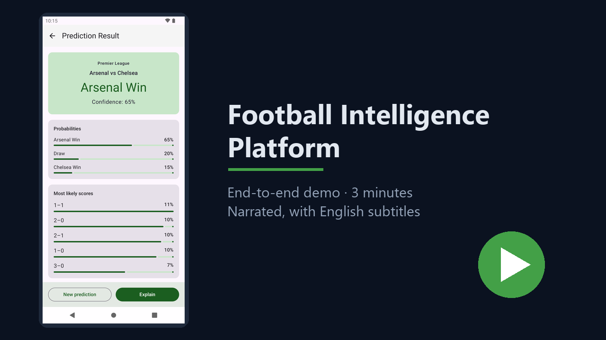

Start with the possibilities.
XGBoost estimates home, draw and away probabilities. A Dixon–Coles goals model adds likely scorelines and expected goals.
See the prediction APIIndependent project · Open source
Match predictions you can inspect. Football questions you can ask. An AI assistant that brings the data to the conversation.
Python + Kotlin. Built to run on your laptop.

One platform. Five leagues.
FROM A FIXTURE TO AN ANSWER
Follow the numbers, understand the factors, then ask the next question.
XGBoost estimates home, draw and away probabilities. A Dixon–Coles goals model adds likely scorelines and expected goals.
See the prediction APISHAP breaks down the factors behind a prediction, with football-friendly labels. The API builds features from match history.
Read the explanation designThe assistant retrieves reference material with citations and calls prediction, explanation, fixtures and season tools for football answers.
Explore the assistant toolsSEE THE WORKING PRODUCT
Real backend responses, explanations, local AI answers and a native app that keeps saved data available offline.
Run it yourselfBUILT TO BE INSPECTED
46,709 matches · 42 pre-match features
Serving refit: 2000/01–2025/26
WORKING LOCALLY. BUILDING WHAT COMES NEXT.
Built by Sumukha. The current assistant runs on Ollama; hosted inference and a private beta are planned. This site introduces the project—the interactive platform runs locally today.